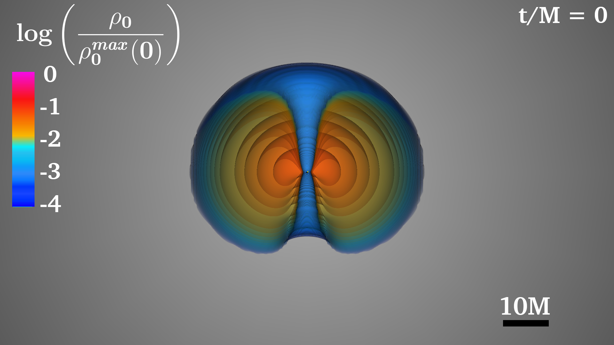
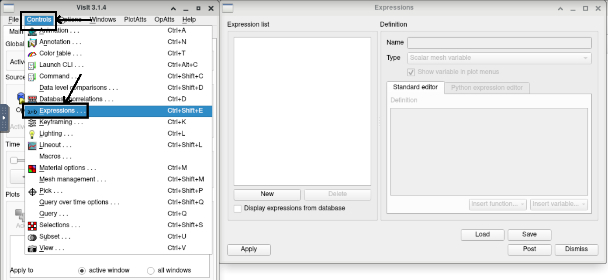
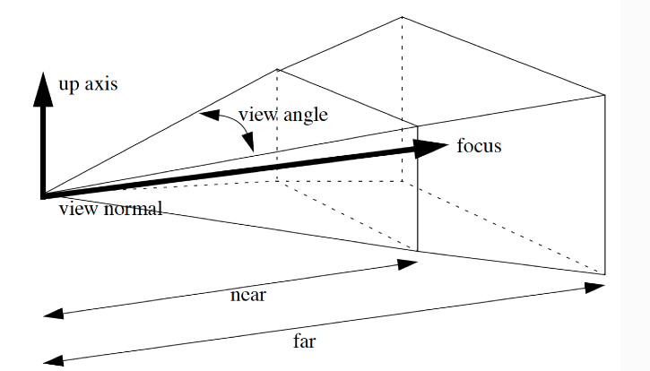

VisIT Elements
The two main VisIt elements are the databases and the plots. The databases are the files that contain the data that we aim to visualize with VisIt. The plots are the visualizations we create with the data. In this section, we introduce and provide examples of different databases and plots, as well as other relevant aspects of VisIt, that we will later use for our numerical relativity visualizations.
Databases
Databases are files or collections of files that are loaded into VisIt for visualization. In numerical relativity, databases usually contain 3D spatial data at multiple time steps. However, VisIt also supports 1D and 2D databases. VisIt has an extensive list of file formats that it supports. When these file are loaded—provided that they are generated and formatted properly—VisIt automatically detects the type of data that the database contains (e.g. scalar or vector, 2D or 3D). In this section, we will describe a few file types that are commonly used in numerical relativity.
HDF5 Data
HDF5 (Hierarchical Data Format) data [8] is a file format that allows developers to store and manipulate large amounts of data. In numerical relativity, outputting the variables we are interested in visualizing often requires terabytes of data, which is why we use the HDF5 file format for the simulation output. Additionally, HDF5 has multi-threading support, which allows us to leverage parallel processing to speed up the scientific visualization process. HDF5 organizes data in two ways: groups and datasets. Groups can be thought of as links between data objects, such as a directory file structure that connects folders together. Datasets are packages of raw data that the file contains with additional information describing the data itself. The HDF5 data that the Illinois GRMHD code [4] outputs for visualization, stores datasets. Since outputting HDF5 data is done by the evolution code, we will not discuss how to generate HDF5 files. However, we will go over how to view the contents and structure of HDF5 files. We provide a sample HDF5 file that can be found at VisIt-Guide/sec_4/Bx.file_0.h5. This file is just 1 out of 128 separate files that together contain data for the x component of the magnetic field at a couple of times. While working with HDF5 data, there are two command line tools that are especially useful to know, h5ls and h5dump, which can be used to view the h5 data. The command h5dump displays the content of the HDF5 file. When executed with no options, this command displays (dumps) all of the raw data in the terminal. Several useful options that can allow the user to extract information from an HDF5 file more effectively are listed below.
- Viewing file contents: With the -n or -contents flag after the h5dump command (Fig. 12), we can list all of the data stored in the h5 file, which can be especially useful when trying to pick up minute pieces of information quickly from the file. Additionally, we are able to view the headers or titles of the data with corresponding information through the -H or -header flag after the h5dump command (Fig. 13), which can be used to extract specific details about the datasets themselves, such as their attributes and data types.
Figure 12: h5dump with contents flag (h5dmp -n)
Figure 13: h5dump with header flag (h5dump -H)
- Viewing datasets/groups: If we want to view the datasets or groups in an HDF5 file, we can use the -d "Dataset Name" or -g "Group Name" flag with the h5dump command. These flags allow us to analyze specific components of the data that we are interested as well as the raw data stored within the dataset.
VTK Files
Another important data type used in these simulations are Visualization ToolKit (VTK) files. VTK files are ASCII or binary files that can easily be generated using Python scripts or similar methods. The VTK file format is versatile and allows users to convert a database to be plotted in VisIt. VTK files can store scalar, vector, or tensor data on 2D or 3D grids. We break the VTK file format down into six sections.
- Header:The header is the first line of a VTK file and contains the file version and identifier. The header is written as # vtk DataFile Version x.x where the x.x is the version number.
- Title:The title is a string limited to 256 characters. The title is not used by VisIt but should be a description of the data contained in the VTK file.
- Data Type:The data type can either be BINARY or ASCII. Reading and writing binary data is quicker. However, binary data is only portable across different machines if the machines have the same byte ordering. If the byte ordering between machines differed, then binary VTK files need to be preprocessed before they are able to be read by VisIt. Because we don’t work with large datasets when using VTK files, we use ASCII data because of its flexibility and simplicity.
- Grid Structure:This section begins with a line containing DATASET followed by a keyword that
describes the structure of the grid. The options are STRUCTURED_POINTS, STRUCTURED_GRID,
UNSTRUCTURED_GRID, POLYDATA, STRUCTURED_POINTS, RECTILINEAR_GRID, or FIELD. Depend-
ing on which option is used, there are additional lines that are required to specify the grid
(e.g. the dimensions and spacing). Detailed information can be found in the VTK file format
documentation:
https://examples.vtk.org/site/VTKFileFormats/ - Data Set Attributes:This section begins with either POINT_DATA or CELL_DATA followed by an integer specifying the number of points or cells of the data. The next line specifies the type of data using one of the keywords SCALARS, VECTORS, or TENSORS. Following this keyword are the dataName and dataType. The dataName is a short string-identifier and is the variable that shows up in VisIt when a VTK file is loaded as a database. The dataType—which differs from the earlier ASCII vs binary data type—describes the type of numerical data (e.g. int, float, double).
- Data:Following the first five sections, data is output. The structure of the data will depend on the grid chosen in step 4 as well as the type of data (scalar, vector, tensor).
In Code Lst. 4.1.2, we show an example of a truncated VTK data file that contains vector field data.
1 # vtk DataFile Version 2.0
2 spin_vector
3 ASCII
4 DATASET STRUCTURED_POINTS
5 DIMENSIONS 3 3 3
6 ORIGIN -30 -30 -30
7 SPACING 30 30 30
8 POINT_DATA 27
9 VECTORS spinvec float
10 8.185832e-04 5.333040e-04 2.078931e-03
11 8.185832e-04 5.333040e-04 2.078931e-03
12 8.185832e-04 5.333040e-04 2.078931e-03
13 8.185832e-04 5.333040e-04 2.078931e-03
14 ...
Code Lst. 4.1.2:Example of a VTK file
Here, the header is # vtk DataFile Version 2.0, the title is spin_vector, and the data type is ASCII. The grid structure is DATASET STRUCTURED_POINTS, which is a 1D, 2D, or 3D grid with evenly spaced grid points. To fully specify the grid structure of STRUCTURED_POINTS, we must add the lines DIMENSIONS, ORIGIN, and SPACING. By setting DIMENSIONS to 3 3 3, we choose a 3×3×3 grid (which also implicitly chooses 3D). By setting ORIGIN to -30 -30 -30 and SPACING to 30 30 30, we set the grid to be [−30, 30] × [−30, 30] × [−30, 30] where the coordinates can take the values x, y, z ∈ {−30, 0, 30}. The ORIGIN specifies the corner of the grid closest to the −x, −y, −z quadrant and the SPACING specifies the distance between grid points. In the data set attributes section, we have the lines POINT_DATA 27 and VECTORS spinvec float. The first line communicates that we are specifying data on the grid points and that we have a total of 33 = 27 grid points. The second line specifies that our data is vector data (i.e. we need to specify a vector at each point on the grid). We set the dataName to spinvec and the dataType to float. After this section is the actual data, which is truncated but should contain 27 lines of 3 floats separated by spaces. With STRUCTURED_POINTS, the data is ordered with x increasing fastest, then y, then z. So the first four lines of data would correspond to the points (−30, −30, −30), (−30, −30, 0), (−30, −30, 30), (−30, 0, −30).
Plots and Operators
Once databases are loaded into VisIt, plots are created using the data to produce a visualization. Operators can be applied to the plots to modify the resulting information. Plots and operators both have settings that change different aspects of the visualization ranging from aesthetics to compute time and numerical accuracy. It is important to understand how different plots and operators are used and how their settings affect the resulting visualization.
Volume Rendering
Volume rendering, which is employed by the Volume plot, is a way of visualizing 3D scalar fields such as the fluid density. With volume rendering, different values in the scalar field are mapped to different colors and opacities. This mapping allows certain values to be emphasized. Additionally, because the mapping is continuous, volume rendering can create high-quality plots that can incorporate all the input data in the final rendered image with proper configuration. Since GRMHD simulations involve a fluid density (which is a scalar field) that is used to model neutron stars and accretion disks, volume rendering is an important tool for visualization in numerical relativity. Volume rendering within VisIt can be broken into three distinct methods: Splatting, 3D Texturing, and Ray Casting, however Ray Casting is essentially the only method that is used within scientific visualizations due to its precision. For both Splatting and 3D Texturing, the volume rendering methods are hardware accelerated, which means that they leverage the graphics card to produce the image. Unfortunately, this means that the dataset must fit onto the graphics card, so, as the dataset becomes larger, the data will have to be resampled and fed into the graphics card, resulting in a loss of quality within the images. On the other hand, Ray Casting is a more computationally intensive volume rendering technique and uses the entire dataset; however, the computational load can be parallelized to produce high quality images in a timely manner. Ray casting volume rendering works in three steps. First, the scalar database must be loaded into VisIt. From here, we specify a camera/viewing angle (think a camera positioned at a point in 3D space pointed at the data). From this camera angle, rays are shot out from each pixel of the camera and intersect with the volume data’s cells. After the rays interact with the data, VisIt assigns a color and opacity to each pixel based on the “transfer function”, which is the configuration settings set by the user that controls exactly how VisIt decides the pixel’s colors and opacity. An example of ray casting volume rendering used to visualize a magnetized accretion disk that surrounds a binary black hole system can be seen in Fig. 14. For the remainder of the guide, we will refer to ray casting volume rendering as simply volume rendering. For our visualizations, we find that the following Volume plot settings are the most important.
colorControlPointList: colorbar used for plot The colorbar is created through a series of color points placed at different relative density values. The colorControlPoint field takes in the RGBA color value and the density data distribution percentage. Unlike isosurface rendering, rendering automatically fills in the missing color values. Thus, we don’t need to create an elaborate color table with too many intermediate colors.
Figure 14: Ray casting volume rendering of a magnetized accretion disk around a binary black hole system
freeformOpacity: Opacity map used for plot Instead of filling up the colorbar with different color palettes, we are able to exercise fine control over what density values are displayed through the 256-bit freeform array.The colorbar is projected over this array with each value corresponding to a unique density distribution percentage. A 0 corresponds to complete transparency whereas 256 corresponds to complete opacity. In terms of array positioning, the first index corresponds to the lowest density value (this is the outermost layer of the disk/neutron star). Similarly, the last index position corresponds to the highest density value. By assigning different opacity values to different array positions we are able to “activate” different parts of the volume plot (for example we can emphasize the higher densities in an accretion disk by increasing the opacity of the higher density values relative to lower densities).opacityAttenuation: Adjusts overall transparency While the freeform array helps control the finer transparency details, we can also increase or decrease the overall transparency of the volume plot. This is often done at the end after constructing the colorbar and opacity array (for example we decrease the opacityAttenuation when we want to be able to see a black hole that is obstructed by the accretion disk).colorVarMin/Max:: Changes limits on colorbar If we want to only visualize a certain range of the data, we can explicitly specify the minimum and maximum density values after setting useColorVarMin/Max to true. In volume plots of the density, we actually plot the logarithm of a normalized rest-mass density log(ρ0 /ρmax ). Because 0 of this, we always set colorVarMax to 0. For the accretion disk, we set colorVarMin to −4. This range of (−4, 0) is reflected by the colorbar in Fig. 17. Note that changes in min and max values should be followed up with corresponding changes in the opacityAttenuation array since opacityAttenuation assigns opacity relative to the range specified by colorVarMax/Min. For instance, if the first half of opacityAttenuation is filled with zeros, then the densities with log(ρ0 /ρmax ) ∈ (−4, −2) will be transparent. If we increase colorVarMin to −2 while 0 keeping opacityAttenuation the same, then the densities with log(ρ0 /ρmax ) ∈ (−2, −1) 0 will be transparent. Note that values outside the range (colorVarMin,colorVarMax) are transparent.samplesPerRay:: Adjusts smoothness and resolution of plot As mentioned before, ray casting creates the plot by shooting rays and sampling the points in its path. By increasing the number of samples that are being cast through the data for each ray, we are able to improve the overall quality of the image. Having too few sample points along a ray gives rise to sampling artifacts such as rings or voids and decreases the overall ”smoothness”. However, sampling more points takes longer to render. We observe a 1:1 correlation between changes in image rendering time and the number of samples per ray.
To get a better grasp of the volume rendering process, we will be visualizing a 3D model of
density VTK file through both the VisIt GUI and then through the VisIt CLI. This file containing
this 3D data can be found at VisIt-Guide/sec 4/sample density.vtk
- In the GUI, begin by opening up the sample density.vtk file as a database. This can be done by clicking Open and navigating to sample density.vtk in the file explorer that opens up. From here, add a volume plot by clicking Add → Volume → density (Fig. 15) and click Draw in order to create the plot.
- Now we need to draw the sample density and choose the camera/viewing angle in a satisfactory way. Next, open up the volume rendering settings in PlotAtts → Volume . . . , which will open a window as in Fig. 16. In order to activate ray casting, we will need to change the Rendering Method field from Default Rendering to Ray Casting: compositing. Additionally, we will want to increase the Samples per ray from 500 to 10000. Since the Ray Casting rendering method is computationally expensive, make sure to finalize any adjustments to the viewing angle or the model framing before activating the Ray Casting rendering process. The resulting visualization should look similar to Fig. 17.
- Within the transfer function, there are two distinct characteristics that we can experiment with: color and opacity. Starting off with color, the smoothing attribute controls how VisIt will interpolate between the specified color points to create a colorbar that is used to represent the density values plotted within the model. There are three distinct options on how VisIt chooses to interpolate the color points: Linear, Cubic Spline, and None. With Linear interpolation, VisIt will create a simple gradient between each color point and numerically fill in each value. With Cubic Spline, VisIt will create a piece-wise cubic polynomial in order to calculate the color point values, which can create a different type of gradient across the colorbar. With None, VisIT will not interpolate the values in between the specified color points, which creates a colorbar with discrete sections of color.
Figure 15: Creating a volume rendering plot
Figure 16: Volume rendering settings
The following is the corresponding CLI script in order to recreate the Volume Rendering image in Fig. 17.
Figure 17: Volume rendering of the sample density file
Figure 18: Colorbar with linear interpolation
Figure 19: Colorbar with cubic spline interpolation
Figure 20: Colorbar with no interpolation
1 OpenDatabase("sample_density.vtk", 0)
2 AddPlot("Volume", "density", 1, 1)
3 # Volume Attributes
4 VolumeAtts = VolumeAttributes()
5 VolumeAtts.rendererType = VolumeAtts.Raycasting
6 VolumeAtts.samplesPerRay = 10000
7
8 #CubicSpline Smoothing
9 VolumeAtts.colorControlPoints.smoothing =
10 VolumeAtts.colorControlPoints.CubicSpline
11
12 SetPlotOptions(VolumeAtts)
13 s = SaveWindowAttributes()
14 s.format = s.PNG
15 s.outputToCurrentDirectory = 1
16 s.fileName="/path/to/output"
17 SetSaveWindowAttributes(s)
18 DrawPlots()
19 SaveWindow()
Code Listing 4.2.1:run_vol.py
Isosurface Rendering
Like volume rendering, isosurface rendering is a way of visualizing 3D (as well as 2D) scalar fields. The main advantage of isosurface rendering is that it is much less (about 10 times less, depending on the number of isosurfaces) computationally expensive than volume rendering. With this increase in computing speed, isosurface rendering loses detail and realism compared to volume rendering. As the name suggests, isosurface rendering plots the data using isosurfaces: surfaces in which every point has the same data value.
Isosurface rendering in VisIt uses the Pseudocolor plot with the Isosurface slicing operator applied. The Pseudocolor plot is a general-purpose plot that different operators can be applied to. The pseudocolor settings include the color table, and determine the color of specific isosurfaces. The Isosurface operator extracts the data and linearly interpolates values between the data minimum and maximum, with each interpolated value being referred to as a level. By default, VisIt constructs 10 levels across the data, however the specifications of these levels can be modified by the user by either percentages between the minimum and maximum of the data such as 5 %, 15 %, or 20%, or through explicitly specifying the level values themselves such using a comma-separated list of values (e.g. (−2.6, −2.43, −2.32, . . .)).

Figure 21: Isosurface rendering of a massive accretion disk around a black hole
In Fig. 21, we use isosurface rendering to plot the fluid density of a massive accretion disk around a black hole (here the Slice operator is used to view the interior of the disk). Since we are working with an Isosurface operator applied to a Pseudocolor plot, we will need to experiment with their respective settings when creating a visualization using isosurface rendering. We find that the following parameters are the most important to consider when developing isosurface visualizations.
contourMethod: Specifies the values of the isosurfaces VisIt offers three methods to select the specific isosurfaces that are plotted: Level, Percent, and Value. If we choose Level, then VisIt will drawn N evenly spaced isosurfaces between a specified minimum and maximum value (see min/max below) where N is a positive integer specified by the contourNLevels field. If we have min=1, max=10, and contourNLevels=10, then 10 isosurfaces will be placed at the values 1, 2, 3, . . . , 10. The Percent method works sim- ilarly, but instead of drawing evenly spaced isosurfaces between min and max, it draws surfaces using an array of percentages (i.e. numbers between 0 and 1) specified in the contourPercent field. If we have min=0, max=10, and contourPercent=(0.0, 0.1, 0.2, 0.3, 0.9), then 5 isosurfaces will be placed at the values 0, 1, 2, 3, 9. Lastly, if we choose the Value method, then we can specify the exact values at which isosurfaces using an array of real numbers specified by the contourValue field. This method doesn’t require min and max to be specified. If we have contourValue=(0.0, 1.23, 3.14, 7.0, 7.01, 9.87), then 6 isosurfaces will be placed at the values 0, 1.23, 3.14, 7, 7.01, 9.87. Since Value gives us the most control over the isosurfaces, we commonly use this method. Having a larger number of isosurfaces spread across the desired range increases the detail of the visualization. However, when the number of isosurfaces is increased, the opacity of the isosurfaces should be decreased accordingly so that the interior isosurfaces are still visible.min/max: Adjusts the range of data plotted If we wish to use a specific range of data, then we must set minFlag and maxFlag to 1 (true) in both the pseudocolor and isosurface settings (unless we are using contourMethod=Value in the isosurface settings, in which case it doesn’t matter). Then we can specify the minimum and maximum values for the color table (isosurfaces) by changing the min and max fields in the pseudocolor (isosurface) settings. If we leave min/maxFlag off, then the minimum/maximum values will be the absolute minimum/maximum values of the entire dataset.colorTableName: Sets the color table used by the plot The name of the color table used is set in the pseudocolor settings. The specifics about creating and exporting a color table are discussed in Sec. 4.4.opacityType: Sets the opacity of the isosurfaces In the pseudocolor settings, we set the opacityType field to either Constant or ColorTable. If we set it to Constant, then we can set the opacity of all isosurfaces to an opacity specified by the opacity field (which is a number between 0 and 1). If we set it to ColorTable, then the opacity of each shell will be set according to the color table specified by the colorTableName field. The opacity of the isosurfaces is an important parameter. If the opacity is too high, then the outermost shells will conceal the inner shells and detail will be lost. If the opacity is too low, then the object we are visualizing will be almost transparent. Using the opacity from the color table gives us finer control over the opacities of each shell, which allows us to strike the right balance.
To better understand the isosurface rendering, we will be visualizing the same sample file we visualized
using volume rendering in the previous section: VisIt-Guide/sec 4/sample density.vtk.
We will create a visualization in the GUI and provide a CLI script that replicates the visualization.
- In the VisIt GUI, begin by opening up the sample density.vtk as a database, which can be done within the toolbar’s File → Open file, writing the path of the file within the database window, and loading the aforementioned file. From here, we will want to add Pseudocolor→density and the Operators→Slicing→Isosurface as seen in Fig. 22. Then we can click on Draw in order to create a rendering of the data
 {: style="text-align: center;"}
{: style="text-align: center;"}
Figure 22: Setup for the isosurface rendering
1 <?xml version="1.0"?>
2 <Object name="ColorTable">
3 <Field name="Version" type="string">3.0.0</Field>
4 <Object name="ColorControlPointList">
5 <Object name="ColorControlPoint">
6 <Field name="colors" type="unsignedCharArray"
7 length="4">13 0 255 8 </Field>
8 <Field name="position" type="float">0.00</Field>
9 </Object>
10 ...
Code Listing 1:First few lines of bhbhdisk.ct
- At this point there are quite a few different settings we can adjust in order to improve on the quality of the model, such as the pseudocolor settings of the model which is largely controlled by the model’s color table. Colortables are critical to the structure of the visualization, as the color table is essential in highlighting different attributes of the plot. In order to better understand the structure of color tables so we can design and implement our own custom color tables within our models, we break down the example color table as seem in Code Listing 1. Within Visit, color tables are broken up into a series of discretely defined list 26 of colors within XML file under a .ct file extension. Within the XML file, the are listed within a ColorControlPointList in which each distinct objects within the list define a color value at a specific position between the colorbar. Looking at 1, we can see that there are two fields of interest within each ColorControlPoint: the position field parameter and the colors field parameter. An example of a fully detailed colorbar can be found at VisIt-Guide/sec_4/bhbhdisk.ct The colors field parameter defines the color and opacity value at that specific point within the colorbar in a Red-Green-Blue-Alpha (RGBA) color value. The RGBA color value defines a specific color through a mixture of Red, Green, and Blue pixel color values, which are all defined as an integer between 0 to 256. The Alpha aspect of the RGBA color value can be thought of as the associated opacity value for that specific color, which is also an integer between 0 to 256. The position field parameter is a float value defined between 0.00 to 1.00 that is associated with the position of the corresponding RGBA color value within the colorbar. For example, if this position field parameter float value is defined to be 0.5, then the RGBA color value defined within the ColorControlPoint would be associated to the middle of the colorbar. Essentially, VisIt will take these set of discrete color points defined across the colorbar and will interpolate the color points in order to generate a fully continuous colorbar used to map the different density values within the visualization. There are three distinct methods of interpolation that VisIt can use to generate the colorbar from this pre-defined color point list: CubicSpline, Linear, and None. With Linear interpolation, VisIt will create a simple gradient between each color point and numerically fill in each value. With Cubic Spline, VisIt will create a piece-wise cubic polynomial in order to calculate the color point values, which can create a different type of gradient across the colorbar. With None, VisIT will not interpolate the values in between the specified color points, which creates a colorbar with discrete sections of color.
- Now that we have a better understanding of exactly how the color table is set up, we can move onto implementing it and utilizing its properties within our visualization. We can begin by opening up the pseudocolor settings window as seen in 23 by navigating to PlotAtts→Pseudocolor. . . on the GUI toolbar. In the Color section of this window, we can adjust the color table and the opacity used by the plot. If we change the Opacity setting in this section from Full opacity to From color table as well as the Color Table setting to our custom colorbar, we can directly adjust colorbar and the different opacity levels used in the plot through the settings delineated within the color table XML file, which gives us finer control over the visualization. Now all of the color settings are imported from the color table. To create a new color table for experimentation, we can open the color table window by navigating to Controls→Color table... in the GUI toolbar. We describe how to create and export a color table in Sec. 4.4. After the color table is created and exported, we will be 27 able to find the color table in the color table dropdown menu of the pseudocolor plot options window. To experiment with color table settings, we can either modify and re-export the color table in the color table settings window (Controls→Color table...) or directly modify the .ct file found in ∼/.visit/ (which is where color tables export to).
- Additionally, the clarity and resolution of the visualization can also be adjusted by experi- menting with the isosurface rendering settings. Found at OpAtts→Slicing→Isosurface. . . , we can experiment with the isosurface operator characteristics. As mentioned previously, we can adjust the number of isosurfaces and the values each isosurface corresponds to.
Figure 23: Adjusting pseudocolor plot attributes and isosurface operator attributes
- After some experimentation we expect the rendering to be similar to the image in Fig. 24. This image can be replicated by using the bhbhdisk.ct colorbar provided within the manual, as well as using 25 levels within the rendering process.
Figure 24: Isosurface rendering final image
1 ActivateDatabase("sample_density.vtk")
2 AddPlot("Pseudocolor", "density", 1, 1)
3 AddOperator("Isosurface", 1)
4
5 IsosurfaceAtts = IsosurfaceAttributes()
6 IsosurfaceAtts.contourNLevels = 25
7 IsosurfaceAtts.contourMethod = IsosurfaceAtts.Level
8 SetOperatorOptions(IsosurfaceAtts, 0, 1)
9
10 DrawPlots()
Code Listing 4.2.2:Isosurface Rendering CLI Commands
Vector Fields
In this section, we will be making vector plots similar to section 4. The file containing the vector
field data we will be plotting is VisIt-Guide/sec 4/sample vector field.vtk, which is included
with this manual. This file contains data for the simple vector field F (x, y, z) = xˆx + y ˆy + z ˆz. We will give instructions on how to create a plot in the VisIt GUI, and then provide a script to make
the same plot using the VisIt CLI. In the GUI, first open sample vector field.vtk as a database.Then create a Vector plot, choosing vec field as the variable name. If we try clicking Draw,
then the plot will look empty. We will need to adjust some settings before the plot is useful. To do
this, open the PlotAtts dropdown menu and select Vector (Fig. 25).
On the window that opens up, navigate to the Glyphs tab on the top. The reason why no
vectors are showing up is because they are being autoscaled and scaled by magnitude. Since the
vector magnitude varies a lot across the grid (very large near the origin and very small away from
the origin), these two options aren’t good choices for a plot of this data, so uncheck those two boxes.
Now, all the vectors will be the same size. In addition to this, let’s increase the size of the vectors
by setting the scale to 2. Now, your window should look like Fig. 26.
To retain information about the magnitude of the vectors, we can apply a colorbar to the vectors.
To do this, navigate to the Data tab in the vector plot attributes window. Then in the colorbar
dropdown menu, choose the hot colorbar. Finally, to increase the number of vectors in our plot,
navigate to the Vectors tab and set the vector amount to 1000. These two tabs should look like
Fig. 27.
Finally, click Draw. Your plot should look like Fig. 28 (after rotating the plot with your cursor).
You are encouraged to explore some of the settings to see how they affect the plot. The CLI script that recreates the plot is in Code Lst. 4.2.3 and can also be found at
VisIt-Guide/sec 4/run vector.py.. We can run it as follows:
visit -cli -nowin -s run_vector.py
Figure 25: VisIt GUI vector attributes
Figure 26: Vector Glyph attributes
Figure 27: Vector data and vectors attributes
Figure 27: Vector data and vectors attributes
Figure 28: VisIt GUI vector field plot
1 from visit import *
2
3 OpenDatabase("/path/to/sample_vector_field.vtk")
4 AddPlot("Vector", "vec_field")
5
6 v = VectorAttributes()
7 v.scaleByMagnitude = 0
8 v.autoScale = 0
9 v.scale = 2.0
10 v.colorTableName = 'hot'
11 v.nVectors = 1000
12 SetPlotOptions(v)
13
14 c = View3DAttributes()
15 c.viewNormal = (1.0, -1.0, 0.35)
16 c.viewUp = (0, 0, 1)
17 SetView3D(c)
18 s = SaveWindowAttributes()
19 s.format = s.PNG
20 s.outputToCurrentDirectory = 1
21 s.fileName = "/path/to/output"
22 SetSaveWindowAttributes(s)
23 DrawPlots()
24 SaveWindow()
Code Listing 4.2.3:run vector.py
Now that we know how to create vector plots, we will go over some important Vector plot settings.
scale, scaleByMagnitude, autoScale, headSize: Vector size These settings affect the size of the vectors in the vector plot. The parameter scaleByMagnitude scales the size of the vector drawn by VisIt depending on the magnitude of the vector field at that location. If the range of magnitudes of the vectors that we want to plot isn’t too large, then we use this option to convey the magnitude of the vector field. However, if the range of magnitudes is large, then it is hard to create a balanced plot: either the vectors with the smallest magnitudes won’t be visible or the vectors with the largest magnitude will be too large. In the case that the range of magnitudes is too large, then it is a good idea to encode the magnitude of the vectors in their color rather than in their size. Then scaleByMagnitude is turned off, all of the vectors will be the same size. The autoScale option automatically normalizes the size of the vectors. We usually turn this option off in favor of manually setting a normalization by changing the scale option. It is important to note that the autoScale and scale options scale the size of all the vectors regardless of whether scaleByMagnitude is turned on or off. The headSize changes the size of the head of the vector relative to its length. The thickness of the stem can changed using the stemWidth optioncolorByMag, colorTableName, vectorColor: Vector color If the option colorByMag is turned off, then all the vectors will be the same color. This color is specified by changing vectorColor to the desired RGBA tuple. For example, for opaque green vectors, we set vectorColor = (0, 255, 0, 255). If the option colorByMag is turned on, then the color of the vectors will be determined by their magnitudes and the color table specified by the colorTableName option. By default, the color table will run over the entire range of magnitudes present in the data. If we want to restrict this range, we can turn on the options minFlag and maxFlag and specify the minimum and maximum magnitudes by changing min and max.glyphLocation, nVectors, useStride: Vector placement The choices for glyphLocation are AdaptsToMeshResolution and UniformInSpace. VisIt uses AdaptsToMeshResolution as a default. In this case, areas with a finer grid (for example when using adaptive mesh refinement) will have a denser distribution of vectors while areas with a coarser grid will have a coarser distribution of vectors. Sometimes, this can lead to awkward-looking plots where VisIt places most of the vectors in the region where the grid is the finest. If we find AdaptsToMeshResolution causes the vectors to be too unevenly distributed across the plot, then we set glyphLocation to UniformInSpace to place vectors uniformly regardless of the grid. If useStride is set to false (which is the default), then VisIt will attempt to place a fixed number of vectors specified by the nVectors field (note that this is the number of vectors VisIt places before any selection operators are applied). In the case that there are too many vectors or that the vectors are placed too close to each other, we can set useStride to true. Doing this allows us to set the spacing between adjacent vectors by changing the stride field. It is also helpful to note that by default, the vectors VisIt draws represent the vector field at the tail of the vector. To change this, we can change vectorOrigin option from Tail to Head or Middle. By default, VisIt will place vectors across the entire grid which doesn’t give us precise control over the visualization. In a later section (Sec. 5.4) we will describe how to use expressions and selection operators to restrict the vector plot to specific locations.
Streamline Integration
Streamline integration is another way to visualize vector fields in VisIt. In many cases, it can be more intuitive than vector plots. Since VisIt allows us to specify the seed points for streamlines, we can emphasize the parts of the vector field that we want to focus on. Given a stationary smooth vector field F i and an initial condition xi(λ = 0), there exists a unique streamline x(λ) that satisfies dxi dλ = F i. The streamline traces a particle’s movement through the vector field. For example, in an electric field Ei, a streamline seeded by a point x0 traces the movement of a positive charge through Ei that starts at x0. In practice, numerical integrators look at the vector field around some starting point x(t) and predict the position of the particle that moves along this vector field after some small time dt. Then the process is repeated for the new starting point x(t + dt). In this section, we will be visualizing the same vector field we used in section 4.2.3 but this time using streamlines. In the GUI, we open sample vector field.vtk as a database. Streamlines plot is actually the integral curve operator applied to the pseudocolor plot. In the Add plots dropdown, navigate to: Pseudocolor → operators → IntegralCurve → vec field (Fig. 29).
Figure 29: Adding a streamline plot
Next, we need to pick seed points to use. To do this, we open the OpAtts (operator attributes) dropdown menu at the top of the window and select: Integral Curves → IntegralCurve. Since our vector field is spherically symmetric, we will choose seed points that lie on the surface of a sphere. In the Source tab of the integral curve operator attributes window that opens up, select Sphere. Set Radius to ‘5’ (note that Origin is already set to ‘0 0 0’ by default). Next, we set Samples in Latitude and Samples in Longitude to ‘10’ and set Samples in R to ‘1’. These settings will pick points uniformly distributed (with respect to the θ and ϕ spherical coordinates) on the surface of a radius 5 sphere. Additionally, in the Integration tab, change Integration Direction to Both so that the seed points integrate parallel and anti-parallel to the vector field. Finally, in the Appearance tab, change Color by to Vector magnitude. Note that the color table that is used is set by the pseudocolor settings (remember that IntegralCurve is an operator applied to a Pseudocolor plot). The different settings we applied are shown in Fig. 30 Click Apply and then click Draw. Our plot should look like Fig. 31 (as we can see, the field lines are radial as in a point charge.). When recreating this image in the CLI, we will use a different method to choose our points. Instead of using VisIt’s built-in seed generator to create a circle of seed points, we can use a Python tuple. For example, if we want to use n seed points {(xi, yi, zi}n i=1, then we can set the pointList attribute equal to
Figure 30: Integral Curve Attributes
Figure 30: Integral Curve Attributes
Figure 31: Example Streamline Plot
This way, we can write our own scripts to generate seed points. In the following example, we use
NumPy. Another option is to read from a previously created text file. The CLI script that recreates
the plot is in Code Lst. 4.2.4 and can also be found at VisIt-Guide/sec 4/sample density.vtk.
1 import numpy as np
2 from visit import *
3
4 R = 5.; num_samples = 10
5 thetas = np.linspace(0, np.pi, num_samples)
6 phis = np.linspace(0, 2*np.pi, num_samples)
7 points = []
8 for phi in phis:
9 for theta in thetas:
10 x = R*np.cos(phi)*np.sin(theta)
11 y = R*np.sin(phi)*np.sin(theta)
12 z = R*np.cos(theta)
13 points.extend([x, y, z])
14
15 OpenDatabase("sample_vector_field.vtk")
16 AddPlot("Pseudocolor", "vec_field")
17 AddOperator("IntegralCurve")
18
19 p = PseudocolorAttributes()
20 p.minFlag = 1; p.min = 0
21 SetPlotOptions(p)
22 l = IntegralCurveAttributes(); l.sourceType = l.PointList
23 l.pointList = tuple(points); l.integrationDirection = l.Both
24 SetOperatorOptions(l)
25
26 c = View3DAttributes()
27 c.viewNormal = (1.0, -0.35, 0.35); c.viewUp = (0, 0, 1)
28 SetView3D(c)
29 s = SaveWindowAttributes(); s.format = s.PNG
30 s.outputToCurrentDirectory = 1; s.fileName = "streamline_fol/output"
31 SetSaveWindowAttributes(s)
32 DrawPlots()
33 SaveWindow()
Code Listing 4.2.4:run streamline.py
Now that we know how to create streamline plots from a set of seed points, we will go over some important integration settings. For our visualizations, we primarily tune the following integration parameters.
PseudocolorAttributes(): Streamline color In the CLI, changing the color of the streamlines is done by changing the PseudocolorAttributes() corresponding to the plot (it seems that in the CLI, the streamlines are automatically colored by magnitude which cannot be changed). To have constant color streamlines, a constant color table must be created (see Sec. 4.4 for how to create a custom color table). This can be applied to the streamlines plot by setting colorTableName to the new color table. As usual with settings pertaining to color, we can set the bounds of the color table by turning on minFlag, maxFlag and changing min, max.maxStepLength: Maximum step length taken at each integration step In practice, decreasing the maximum step length increases the smoothness of the streamline. Integrators commonly increase the step length when the magnitude of the vector field is greater, which can lead to jagged streamlines in areas where the field is strong. If you find that your streamlines are jagged, decrease maxStepLength until your streamlines are smooth. However, if your step length is too small, then your streamlines can get caught up in numerical errors. It is important to note that decreasing the step length will decrease the overall length of your streamline, which can be counteracted by increasing maxSteps.maxSteps: Number of integration steps taken For a fixed maxStepLength, increasing the number of integration steps typically increases the length of the streamline. Since integrating more steps increases computational complexity, we recommend starting with a smaller number of steps (≈ 1000) and increasing the number of steps until you are satisfied with your image. A helpful way to visualize your seed points is by setting the number of steps to 1-10. If you increase maxSteps but you don’t see any change in the length of your streamlines, try using a different integrationType and maxStepLength.integrationDirection: Integrate parallel or anti-parallel with the vector field You can integrate your seed points along the vector field using the Forward option (think the movement of a positive charge in an electric field) and you can integrate your seed points against the vector field using the Backward option (think the movement of a negative charge in an electric field). To integrate in both directions, use the Both option.integrationType: Integration algorithm used Integration methods affect the stability of the streamline. Lower-order integrators such as Euler (first-order) or Leapfrog (second-order) are less accurate at following the exact solution than Runge-Kutta (fourth-order) methods. However, streamline integration in 3D is very finicky, and we sometimes have used Euler/Leapfrog to get better images.DormandPrince: Runge-Kutta-Dormand-Prince This is VisIt’s most advanced integrator, which allows the user to pick tolerances that match the simulation data. It also uses an adaptive step length which you can limit by changing maxStepLength. We recommend defaulting to this integrator and experimenting with the settings before trying other options.RK4: Runge-Kutta 4 This is a standard RK4 fourth-order integrator that uses a fixed step length that the user can change by changing maxStepLength (this setting limits the maximum step length for adaptive step integrators and sets the step length for fixed step integrators).Euler/Leapfrog: Euler implements the standard first-order Euler method integrator and Leapfrog is a second-order integrator. These are also fixed step length integrators. Since lower-order integrators are more prone to error, we don’t recommend using these unless you’ve exhausted the other options.
Expressions
There are often mathematical relationships derived from the different variables that exist in our simulation data we will want to visualize. To address this need within scientific visualizations, VisIt allows us to create mathematical expressions from database variables.

Figure 32: Expression window within VisIt
In the GUI, expressions can be created and edited in the expressions window at Controls→Expressions. On the left-hand side, there is an expression list that contains a list of different expressions that have either been automatically created by VisIt or manually created by the user (Fig. 32). On the right-hand side, we see the definitions for the mathematical expression that we have selected from the expression list, which can be broken down into the Standard editor or the Python expression editor. In order to create a new expression, there is a New button at the bottom left corner of the editor. From here, the expression can be defined using the Python expression editor window or the standard editor window. There are multiple different options based on what type of variable is being edited, found in the Type drop-down menu, which changes the use of the application of the mathematical expression as expected. We commonly use expressions in VisIt to normalize and transform the simulation data when creating the visualization. For instance, in our visualizations of the fluid rest-mass density, we plot the density in the units of initial maximum density as log(ρ0/ρmax 0 (0)) instead of just ρ0 so that we can have more clarity. As an example, we will create this expression using the sample density.vtk density file we visualized in Sec. 4.2.1 and Sec. 4.2.2. In VisIt, begin by navigating to Controls → Expressions and create a new expression within the expression window. Within this situ- ation, we would like to transform the density variable, and after a simple examination of the sample density.vtk file, we can find that the max variable is 1200.0. Using this information, we can write the expression as seen within Fig. 33. After doing so, we use this variable by clicking the Apply button
Figure 33: Set up for log ρ expression
From here, we can create an isosurface rendering of the density, which can be done following the steps listed in Sec. 4.2.2. The final image should look similar to Fig. 34. Another way to use expressions is to create a vector field from three scalar fields. If the data for the x, y, and z components of a vector field are contained in three separate scalar databases, then they must be combined into a vector field expression before we create Vector or IntegralCurve plots with the vector field data. For HDF5 data, the individual scalar databases must be cast onto the same mesh before they are combined into a vector expression. We will use HDF5 databases Bx.file * database, By.file * database, Bz.file * database that contain magnetic field data that is output by the Illinois GRMHD code as an example. After opening up these databases as the same type (in this case it would be CarpetHDF5), we must create new scalar expressions of these databases after they have been cast onto the Carpet AMR-grid.
Figure 34: Isosurface rendering of log(ρ) - sample density
This is done with conn cmfe() method. For the Bx.file * database which has the HDF5 prefix MHD EVOVLE, we would do:
conn_cmfe(, )
Using this expression, we create new expressions Bx, By, Bz for the three components of the magnetic field that all share the same grid. To do this on the GUI for Bx, we create a new Scalar mesh variable in the expressions window. We name it Bx and input the entire conn cmfe() command shown above into the definition. We repeat the process for By and Bz. Then to create a vector field, we create a new Vector mesh variable. We name it Bvec and input {Bx, By, Bz} into the definition. The expressions for Bx and Bvec are shown in Fig.
Figure 35: Creating a vector expression from scalar HDF5 databases
Figure 35: Creating a vector expression from scalar HDF5 databases
In the command line, this can be done using Code Lst. 4.3 which can also be found at
VisIt-Guide/sec 4/define_vec_field.py.
1 OpenDatabase("/path/to/data/Bx.file_* database", 0, "CarpetHDF5_2.1")
2 OpenDatabase("/path/to/data/By.file_* database", 0, "CarpetHDF5_2.1")
3 OpenDatabase("/path/to/data/Bz.file_* database", 0, "CarpetHDF5_2.1")
4
5 DefineScalarExpression(Bx, "conn_cmfe(</path/to/data/Bx.file_* \
6 database[0]id:MHD_EVOLVE--Bx>, <Carpet AMR-grid>)")
7 DefineScalarExpression(Bx, "conn_cmfe(</path/to/data/By.file_* \
8 database[0]id:MHD_EVOLVE--By>, <Carpet AMR-grid>)")
9 DefineScalarExpression(Bx, "conn_cmfe(</path/to/data/Bz.file_* \
10 database[0]id:MHD_EVOLVE--Bz>, <Carpet AMR-grid>)")
11
12 DefineVectorExpression("Bvec", "{Bx, By, Bz}")
Code Listing 4.3:define vec field.py
Exporting Attributes
A typical workflow when using VisIt is to experiment with plot/operator settings using the more intuitive GUI, and then implementing these settings in the CLI so they can be applied to a whole suite of visualizations. Thankfully, if you need to change a lot of settings, you don’t need to write a separate line of code for each setting like in the run vector.py example (Code Lst. 4.2.3). Instead, VisIt allows your to export plot/operator settings in the GUI as .xml files which can then be loaded in the CLI. For example, if you are making a visualization that includes a volume plot, you will probably want to finely tune things like the color table and opacity values until you are satisfied with an image. If you don’t want to use any of the default VisIt color tables, then the first step would be to create your own color table. First we launch the VisIt GUI, then we open up the color table settings by opening the Controls dropdown menu in the toolbar and clicking Color table (Fig. 36). In the window that opens up, we can change the settings to our liking. When creating a new color table, the first step is to choose the number of colors we want. Changing this field will change the number of “color tabs” in the window. To change each individual color, we can click the “tab” and change the RGB values respectively. We can also specify an alpha value, which determines the transparency of the color (0 is transparent, 255 is opaque). Changing the opacities is especially useful when using isosurface rendering. This is because there is an option to use the opacity from the color table which gives us finer control over the opacity of the isosurfaces. We can also choose how the colors are smoothed into each other.
Figure 36: Creating color tables
When we are done, we need to export the color table so it can be used in other parts of VisIt. First, we give the color table a name in the Name field (in the example below, we name our custom black and yellow color table my colortable). Then we click New and then Export to save this color table in ∼/.visit/ (e.g. our color table saves as ∼/.visit/my colortable.ct). Now, we are able to access this color table from the CLI. For example in Code Lst. 4.2.3, we can write v.colorTableName = 'my_colortable' instead of v.colorTableName = 'hot' to use our custom color table for the vector plot. To be more precise with our custom color table, we can open up the exported .ct file to change the exact locations and the specific RBGA values of each color. If we want to use custom color tables on another machine, we need to copy all the .ct files from the first machine to the ∼/.visit/ folder on the second machine. The next step in specifying settings for our volume plot would be to experiment with and export the volume settings as an .xml file. First, we load up whichever database we want to visualize using a volume plot. Then we open up the volume settings in the GUI by navigating to Volume in the PlotAtts dropdown menu in the GUI toolbar. We then configure our volume settings to our liking (we can choose the custom color table that we just made). When we are satisfied with the plot, we can click Save which opens a file explorer. We then enter where we want to save your volume attributes .xml file before saving (Fig. 37)
Figure 37: Exporting attributes to .xml files
Now that we have a volume attributes .xml file saved, instead of specifying the volume settings one by one in the CLI like shown in Code Lst. 4.4.
1 v = VolumeAttributes()
2 v.attribute1 = x1
3 v.attribute2 = x2
4 ...
5 SetPlotOptions(v)
Code Listing 4.4:Changing settings manually in CLI
we can simply import our settings from the .xml file like shown in Code Lst. 4.4
1 v = VolumeAttributes()
2 LoadAttribute('/path/to/my_volume.xml', v)
3 SetPlotOptions(v)
Code Listing 4.4:Importing settings from a .xml file
We usually like to store the more commonly reused settings, or more complicated settings such as color tables or the freeformOpacity volume setting in .ct and .xml files. For some settings that we change very often, it is still useful to directly set them in the CLI. Commonly, we load a saved .xml file, and then override specific settings with our own choices.

Figure 38: View 3D diagram
Finalizing Images
After you’ve decided on the plots, operators, and settings, the last step is to decide how you want to present your 3D visualization. The first step is to set the View3DAttributes, which basically determine where you place and point the camera and how far it zooms in on the plot. You’ve already seen these options in all of the CLI sample scripts we’ve shown previously. The three most important parameters are focus, viewNormal, viewUp, and imageZoom. The focus is where the camera points, which is commonly set to the main object being visualized. The viewNormal specifies the location of the viewer/camera and the viewUp specifies which direction is ‘up’ in the final image. See Fig. 38 for a better understanding. The imageZoom simply controls how zoomed in the camera is on the focus. In your script, to set the view of your plot, add lines like
1 c = View3DAttributes()
2 c.viewNormal = (1.0, 1.0, 1.0)
3 c.viewUp = (0.0, 0.0, 1.0)
4 c.focus = (0.0, 0.0, 0.0)
5 c.imageZoom = 1
6 SetView3D(c)
Setting Options Manually in CLI
The next things to change when finalizing an image would be the annotations. The VisIt labels and legends aren’t super customizable, so the numerical relativity visualizations we make don’t make use of them. With the exception of the t/M label, we finalize our images by removing all VisIt legends and labels, and adding our own with image editors like GIMP or Photoshop. However, we will still briefly go over some of the options you have.
Figure 39: Text Annotations
o open the annotation settings in the GUI, click Annotation in the Control dropdown menu. The setting that you might want to change first is the background color, which can be found in Colors tab of the window that opens up. Change this to something that will make your visualization stand out. To add text to your image, in the Objects tab, click the Text button on the upper left, and configure things like the position, content, and font (Fig. 39). You can turn off things like the legends (e.g. colorbars), axes, and bounding boxes by unchecking the boxes in the General and 3D tabs. Below in Code Lst. 4.5, we provide a code snippet that applies these annotation settings we’ve discussed.
1 a = AnnotationAttributes()
2 a.backgroundMode = a.Solid
3 a.backgroundColor = (155, 155, 155, 255) #gray
4 a.legendInfoFlag = 0
5 a.userInfoFlag = 0
6 a.axes3D.visible = 0
7 a.axes3D.triadFlag = 0
8 a.axes3D.bboxFlag = 0
9 SetAnnotationAttributes(a)
10
11 txt = CreateAnnotationObject("Text2D")
12 txt.position = (0.75, 0.95) #(x,y) where x and y range from 0 to 1
13 txt.useForegroundForTextColor = 0
14 txt.textColor = (255, 255, 255, 255)
15 txt.fontBold = 1
16 txt.fontFamily = txt.Times
17 txt.text = "t/M = {}".format(int(t/M))
Code Listing 4.5:Applying annotation settings
The final step is to specify the SaveWindowAttributes, which deal with the format of the saved image file. You can choose where the image is saved, and the aspect ratio of the image, among other settings. An example is shown in Code Lst. 4.5.
1 s = SaveWindowAttributes()
2 s.format = s.PNG
3 s.outputToCurrentDirectory = 1 #so we can choose where to output
4 s.fileName = "/path/to/output"
5 s.width = 1920 #creates a 1920 X 1080 image
6 s.height = 1080
7 s.resConstraint = s.NoConstraint
8 SetSaveWindowAttributes(s)
Code Listing 4.5:Saving a plot to an image file